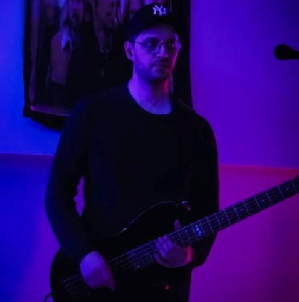

Harrastuksiini kuuluu musiikki.
Tämä pitää sisällään laulua, sekä useamman instrumentin käyttöä.
Juuri nyt soitan bassoa meidän bändiprojektissa, jota olemme ystävien kesken pyörittäneet jo pitkään.
Instrumentteihin kuuluu:
Teemme keikkoja miten ennätämme itse järjestämään ja 17.5. onkin jälleen seuraava tulossa!
Tässä on bändimme linktree! Sitä kautta pääset kaikkiin meidän somealustoihin. Laita seuraten ja nähdään keikalla!